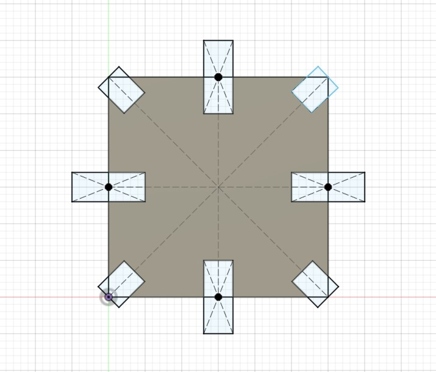
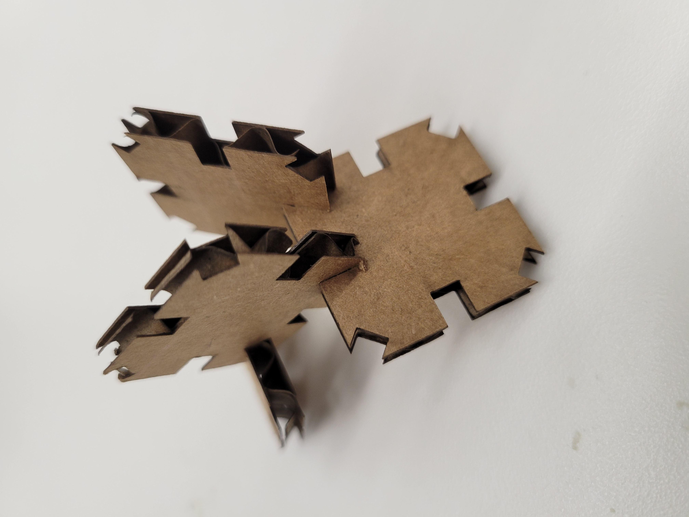
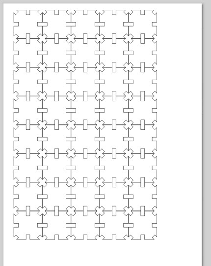
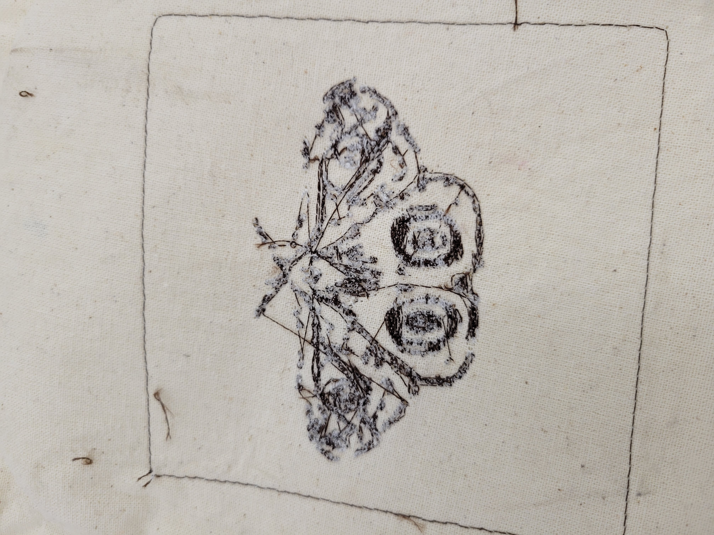
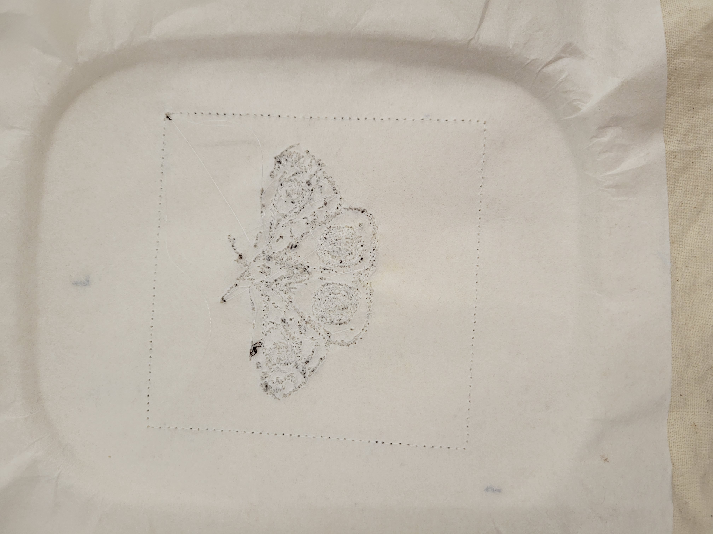
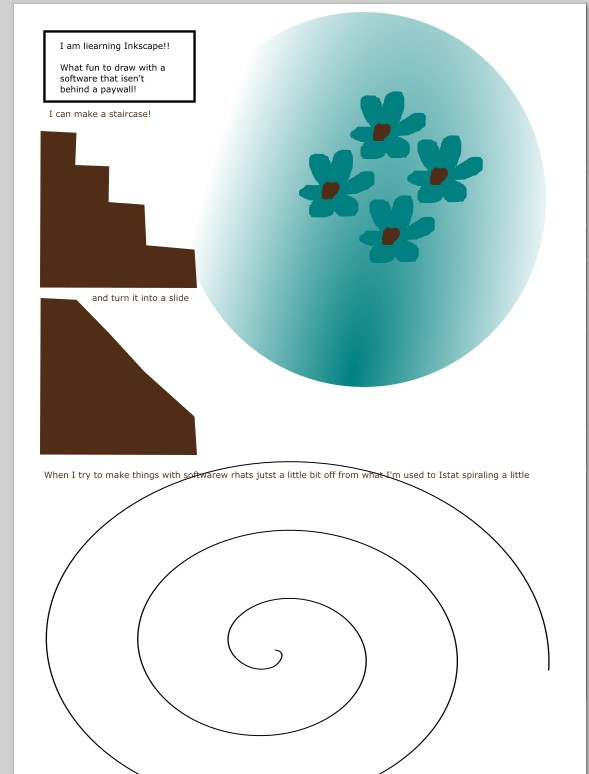

<br>
#### Week 2: Pressfit and Moth
Here is an image:



<img src="25.jpg" alt=" another sketch stylized PS70 logo" style="width:500px;height:600px;">


<img src="28.gif" alt=" gif of the machien sewing" style="width:500px;height:600px;">

This week I did the pressfit project and started trying to learn Inkscape, I'm really familiar with illustator (and have a cracked copy) but wanted to get on the opensoure wave. I measured the kerf on the cardboard but decided that because the cardboard is relativly flexible and I wanted things to fit really tightly I'd make the gap an extra mm smaller. I also attended the lab demo on the embrodery machine and (a few weeks later) made this moth with the inksketch extension on inkscape.